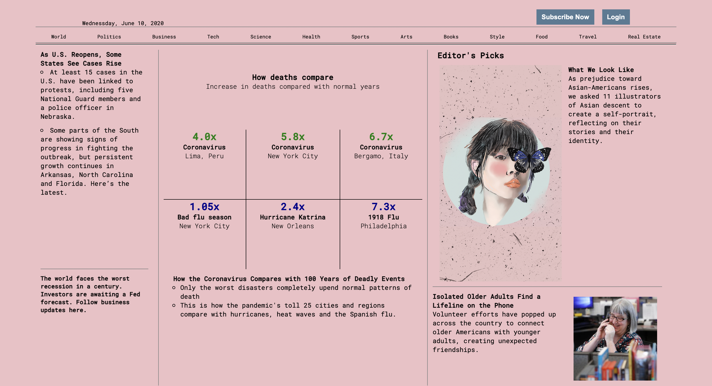
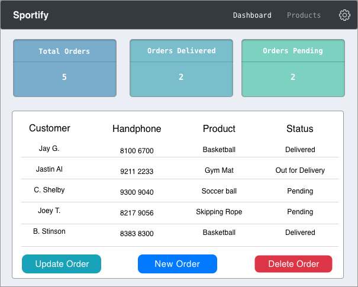

The Corona Times
The Corona Times is a project I created after learning the basics of CSS. I created this project using the design of The New York Times' website. I chose this website as I wanted to focus on using CSS grid layout and this website gave me a lot of opportunities to use it. I wanted to focus on grid display as it is very useful and convenient in aligning selected elements to the desired position. I was also successful in using JavaScript to alternate the pictures. This is the first landing website project I have done.
Elena Joy

Elena Joy is a landing website I created using HTML and CSS. The design of the website came from YouTuber, Dev Ed. It is a website for a professional photographer to display her work. When creating Elena Joy, I used a majority of CSS flexbox and grid layout. One of the challenge i experienced was when I needed to display her work. In order to ensure her photos were displayed in a neat and appealing manner, I used grid layout. However, as I also needed to ensure that these images will be mobile-friendly, I had to change these images to a flexbox layout when the screen size becomes smaller. Lastly, I also included some JavaScript to some of the background images to make the website look more lively.
Sportify Online Store
With the guidance of YouTuber, DennisIvy, I was able to create my first backend Django website. This project is a customer management website intended for the staffs to oversee the company’s orders and the information of each customer. In this website, you will be able to register a new customer, place a new order, edit/delete the customer’s information and the customer’s order. You will also be able to filter the available products by name, price and category. Also, you can only access this website by having an account. Even though this website is primarily meant for staffs, a customer can also use it to place an order. When a user signs up, they will only be given the customer rights. The staff rights is only given to staff accounts assigned by the company. The password created by the users will be hash as well. Users can also reset password using the ‘forget password’ feature. Lastly, the website is live and deployed through Heroku.
[Staff Account: ID: admin | PW: sohjustin]